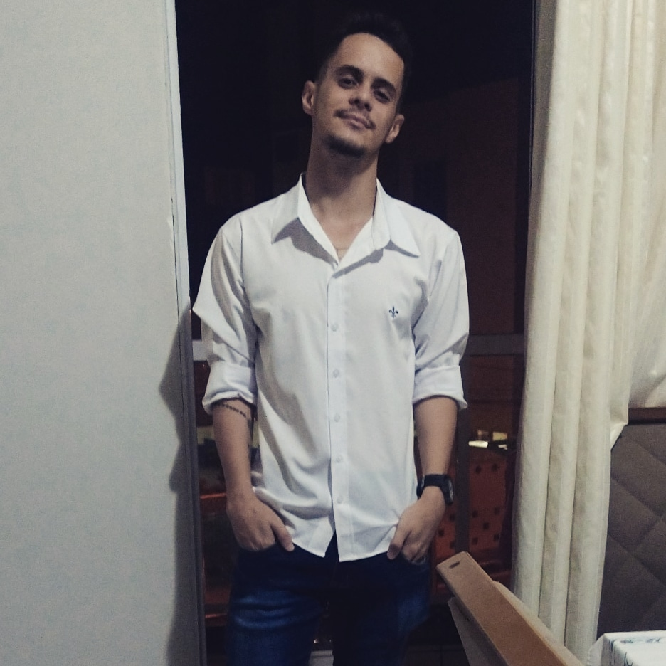

- Home
- >
- Currículo
Currículo
Dados Pessoais

Nome:
Luiz Felipe Xavier Pinto
Data e Local de Nascimento:
10 de junho de 2001 - Varginha-MG
Residência:
Itajubá-MG, Brasil
Idiomas:
Português (Nativo)
Espanhol (fluente)
Inglês (avançado)
Sobre Mim
Sou o Luiz Felipe e tenho 22 anos, faço Engenharia de Controle e Automação na Unifei desde março de 2020, atualmente (jun/2023) estou em meu 7° período, a faculdade me proporciona muito conhecimento e experiências, sendo a maior delas até hoje fazer parte da Asimov Jr, onde entrei em jun/2020 de maneira oficial e sai em dez/2021, tendo como último cargo Diretor de Projetos da empresa.
Ao longo desses anos de faculdade e empresa júnior obtive alguns contatos com a programação e apesar de não possuir conhecimento avançado nessa área, sei que me encontrei na área e quero aprender cada vez mais. Possuo contato básico com o JavaScript, visto que na Asimov nós utilizamos esta linguagem em nossos projetos desktop (área da qual fiz parte) e utilizei em um projeto junto com um companheiro (falo deste projeto em meu portfólio na etapa de JavaScript). Por conta das matérias da Unifei, possuo contato básico com C e C++ também, porém de maneira básica para fazer os laboratórios.
Porém, o maior desenvolvimento que obtive foi o desenvolvimento pessoal das questões de liderança e comunicação, aprendi a trabalhar melhor estas habilidades e a melhor maneira de utilizá-las. Além disso, confirmei que amo aprender, sempre queria fazer tudo o que fosse possível e não me sobrecarregasse (até mesmo de outras áreas quando era necessário). Descobri o gosto por programar e não ter isso como um hobbie, mas como uma profissão.
Após a Asimov, também acabei fazendo parte da equipe Cheetah Racing, onde consegui desenvolver habilidades na parte de eletrônica (visto que eu fiz parte desta subequipe), participei de competição, trabalhei com prazos apertados, enetreguei muitos relatórios e realizei muiitos testes e montagens para o carro. Aprendi muito com a equipe, uma parte que não havia na empresa júnior e isso foi mais uma experiência gratificante em minha vida.
Durante o curso de Controle e Automação, durante uma matéria a respeito dos processos de automatizaçãoe e uso de supervisórios, realizei um curso da plataforma elipse, sendo este o Elipse E3 Desenvolvedores, onde pude criar e deixar funcional um sistema de controle de uma subestação de energia.
Por fim, sempre realizo cursos na plataforma da Alura, visando aprofundar ainda mais nas linguagens de programação e estar prepadao para as mudanças do mercado, além de me manter atualizado, visto que hoje em dia, a parte de programação está em evolução de maneira rápida e eficaz, por isso estes cursos são muito importantes para mim.
Meus trabalhos
Já realizei projetos utlizando html e css, durante meu processo de trainee da Asimov Jr, porém após esta etapa comecei a desenvolver aplicações utlizando o JavaScript em conjunto com a ferramenta Angular.Também realizei a criação de sites, aplicações e testes automatizados durante as capacitações de conhecimento na plataforma Alura e por fim, realizo projetos de forma independente, tendo já criado um site para uma equipe de futsal amador da cidade de Itajubá-MG.
Educação
2020-Em andamento
Engenharia de Controle e Automação/Graduação/Universidade Federal de Itajubá (Unifei)
2017-2019
Colégio Sagrado Coração de Jesus - CSCJ - Ensino Médio - Itajubá-MG
Habilidades
interpessoais
Comunicação / Objetividade / Responsabilidade / Cordialidade
Linguagens
JavaScript/ C / C++ / Html / CSS
Experiência de Trabalho
set/2022-jan/2023
Projetista de Aquisição de Dados - Cheetah Racing - Itajubá-MG
mai/2022-ago/2022
Membro de Eletrônica - Cheetah Racing - Itajubá-MG
fev/2021-dez/2021
Diretor de Projetos - Asimov Jr. - Itajubá-MG
jan/2021-fev/2021
Gerente de Projetos Desktop - Asimov Jr. - Itajubá-MG
jun/2020-dez/2020
Consultor de Desktop - Asimov Jr. - Itajubá-MG
mar/2020-jun/2020
Trainee de Projetos - Asimov Jr. - Itajubá-MG
Contato
lfxavier1@gmail.com
(35) 98825-3627
← Voltar ao início